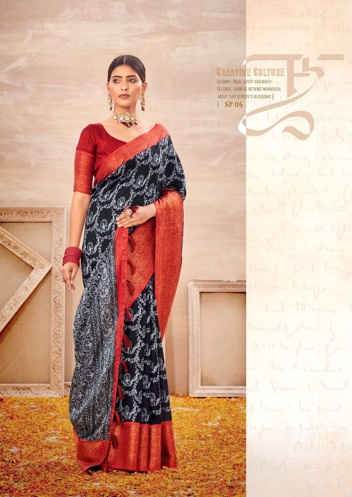

An eminent geographical indication, Apatani sarees find their home in the state of Arunachal pradesh.
The Apatani tribe of Arunachal Pradesh is known for its Apatani weave, which is famous for its zigzag, geometric, and angular designs. The Apatani people live in the Ziro Valley, the headquarters of Lower Subansiri district. They use leaves and other plant-based resources to dye yarn naturally, following a sustainable social forestry system.
The Apatani people of Arunachal Pradesh, India, weave their own textiles using bamboo and wooden sticks to create a framework called a warp. The warp is made by stretching yarn between two parallel bamboo sticks, then passing it over the bamboo, and up and over the bamboo on the bottom. The fabric is then known as zig zeros or jilans, which are shawls, or supuntari, which are jackets. The Apatani use traditional methods to mold cotton yarn into organic form using leaves and plants
